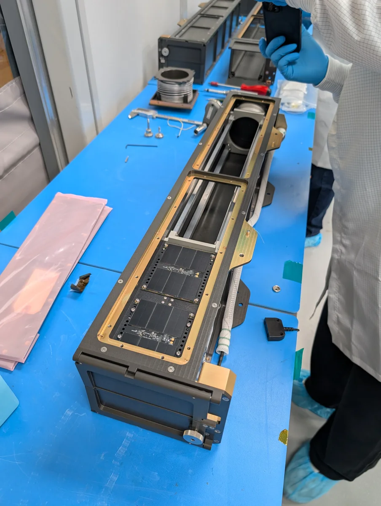
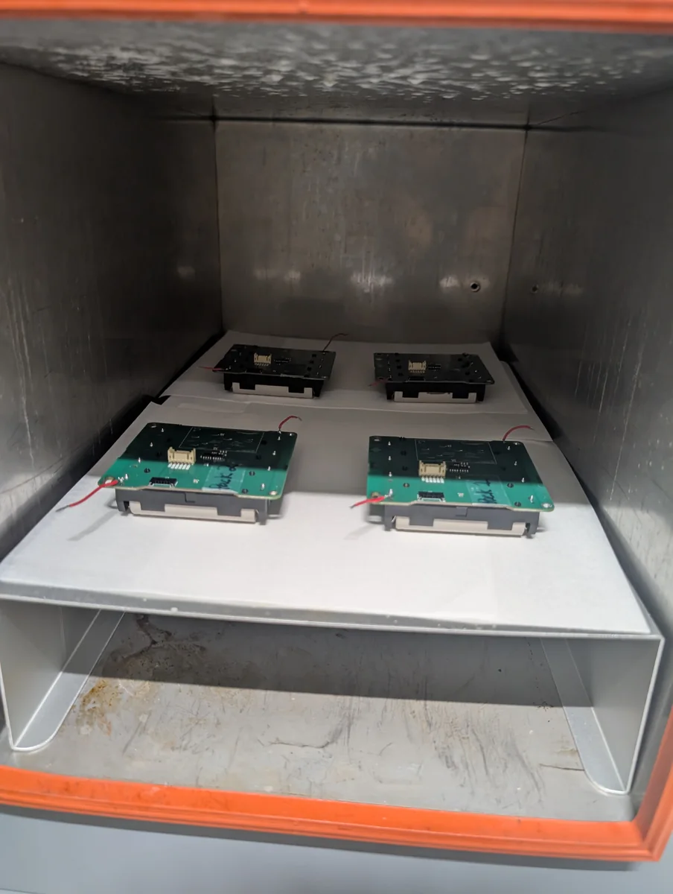
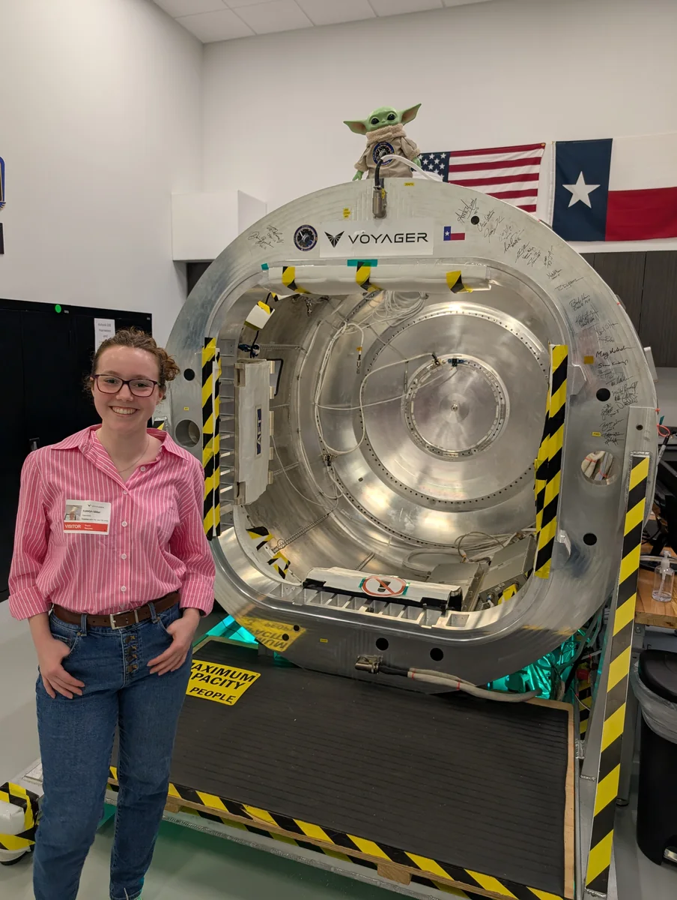
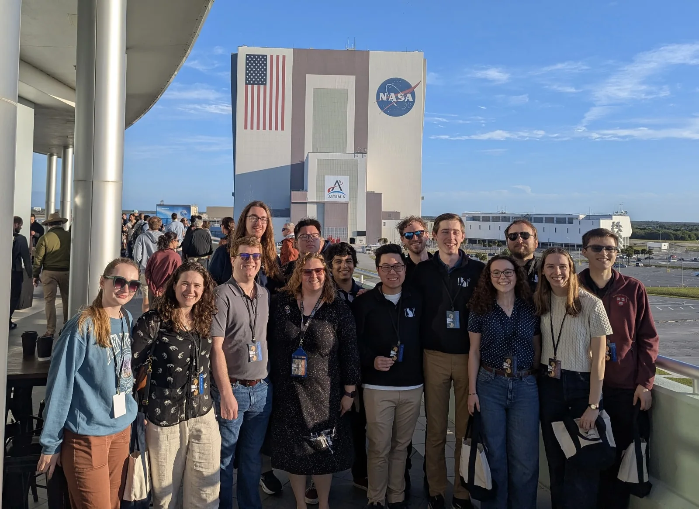
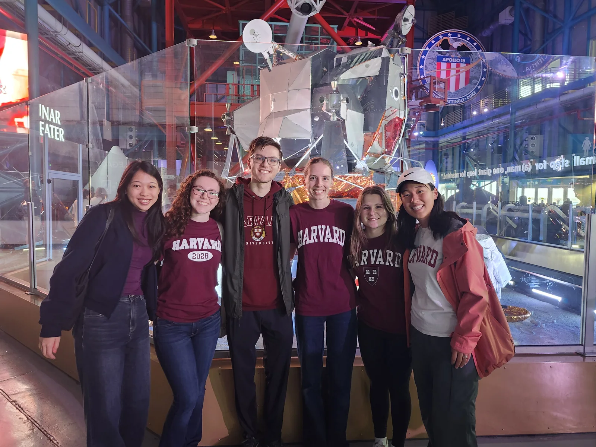
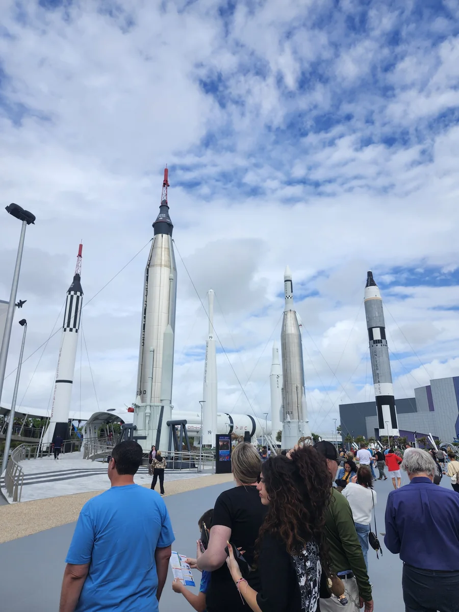
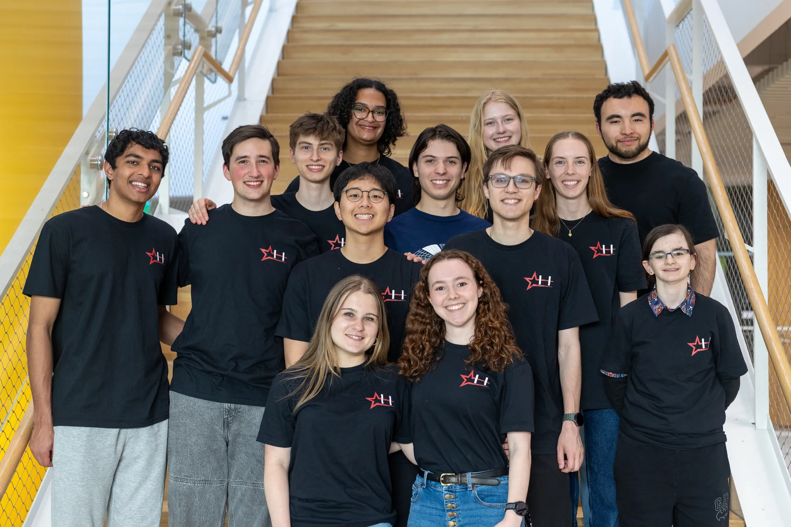

Structure & power
A custom aluminum 2U frame houses the subsystem stack. Body-mounted solar panels and protected lithium-ion batteries support the ISS-deployment mission profile.
HUAC’s Satellite Team designs, builds, tests, and operates CubeSats. Its first spacecraft, HUCSat, is a 2U research satellite testing a shape-memory-alloy mechanism for reorienting a deployable solar-panel platform.
Follow the real-time position of HUCSat using the satellite tracker developed by the team.
Positions are computed live in your browser from HUCSat's latest orbital elements (NORAD 69794, via CelesTrak). Passes count once HUCSat climbs above 30° elevation at our ground station on the SEC roof; the red ring on the map shows that coverage area.
Mission overview
HUCSat is Harvard College’s first student-built CubeSat. Its payload tests whether shape-memory-alloy (SMA) actuators can reorient a solar-panel platform with less mass, power, and mechanical complexity than motors and geartrains.
The spacecraft was handed off for launch integration in January 2026, launched to the International Space Station aboard Northrop Grumman’s NG-24 mission on April 11, and deployed into low Earth orbit on July 2, 2026. The team is now receiving telemetry and mission data through its on-campus ground station and the amateur-satellite community.
Explore the HUCSat engineering overview by chief engineer Christopher Prainito for more mission details.
The payload
After deployment, a torsion-spring linkage lifts the panel platform away from the satellite body. Four nickel-titanium (Nitinol) coils can be heated individually; their contraction turns the platform toward the Sun without a motor or gearbox.
Onboard light sensors verify the panel’s response. The mission tests whether this low-part-count, low-power approach can produce useful, repeatable motion in orbit.
HUCSat progress
A look inside the hardware preparation and testing that brought the student-built spacecraft to flight.



Mission goals
Spacecraft systems
A custom aluminum 2U frame houses the subsystem stack. Body-mounted solar panels and protected lithium-ion batteries support the ISS-deployment mission profile.
A custom flight controller handles boot sequencing, payload scheduling, data logging, and fault response. An IMU, light sensors, and magnetorquers support detumbling and coarse attitude control.
UHF supports command and telemetry; S-band provides a higher-throughput payload-data link. The ground segment connects the student team with a wider amateur-satellite receiving network.
Verification
Verification included battery protection and environmental checks, repeated payload deployment cycles under thermal-vacuum conditions, vibration testing, and end-to-end radio link checks with ground-station equipment. The team continues monitoring spacecraft telemetry and payload data after deployment.
April 2026 · Kennedy Space Center
The launch trip brought the team to Florida to celebrate HUCSat's journey to space and explore Kennedy Space Center together.



Harvard John A. Paulson School of Engineering and Applied Sciences video of the HUCSat launch.
From the ISS to orbit
HUCSat's deployment from the International Space Station on July 2, 2026.
